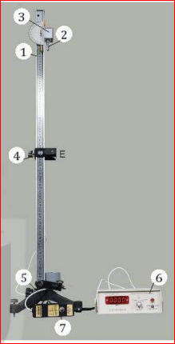
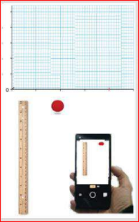

Hình 11.1. Bộ dụng cụ thí nghiệm đo gia tốc rơi tự do
Hoạt động: Thảo luận về phương án thí nghiệm dựa trên hoạt động thả trụ thép rơi qua cổng quang điện trên máng đứng và trả lời câu hỏi.
1. Xác định gia tốc rơi tự do của trụ thép theo công thức nào?
2. Để xác định gia tốc rơi tự do của trụ thép cần đo các đại lượng nào?
3. Làm thế nào để trụ thép rơi qua cổng quang điện?
4. Cần đặt chế độ đo của đồng hồ ở vị trí nào để đo được đại lượng cần đo?
| Quãng đường | Lần đo thời gian | ||||
|---|---|---|---|---|---|
| Lần 1 | Lần 2 | Lần 3 | Lần 4 | Lần 5 | |
| \( s_1 \) | |||||
| \( s_2 \) | |||||
| \( s_3 \) | |||||
| \( s_4 \) | |||||
| \( s_5 \) | |||||
| Kết quả: \( \overline{g} = ... \); \( \Delta g = ... \); \( g = \overline{g} \pm \Delta g \) | |||||
1. Hãy tính giá trị trung bình và sai số tuyệt đối của phép đo gia tốc rơi tự do.
2. Tại sao lại dùng trụ thép làm vật rơi trong thí nghiệm? Có thể dùng viên bi thép được không? Giải thích tại sao.
3. Vẽ đồ thị mô tả mối quan hệ \( s \) và \( t^2 \) trên hệ toạ độ \( (s-t^2) \).
4. Nhận xét chung về dạng của đồ thị mô tả mối quan hệ \( s \) và \( t^2 \) rồi rút ra kết luận về tính chất của chuyển động rơi tự do.
5. Hãy đề xuất một phương án thí nghiệm khác để đo gia tốc rơi tự do của trụ thép.
Rơi tự do là chuyển động thẳng, nhanh dần đều nên có thể xác định gia tốc rơi tự do theo công thức xác định gia tốc của chuyển động nhanh dần đều. Sử dụng đồng hồ đo thời gian hiện số và cổng quang để đo.
Sử dụng camera của điện thoại thông minh và phần mềm phân tích video để xác định được gia tốc rơi tự do của vật.

Vào năm 1602, Galilei phát hiện ra chuyển động của con lắc và khoảng thời gian một chu kì tỉ lệ với căn bậc hai chiều dài con lắc. Nhờ phát hiện này có thể đo gia tốc rơi tự do bằng con lắc đơn.
Bài 1: Một vật rơi tự do từ độ cao \( h \). Biết sau 2 giây thì vật chạm đất. Lấy \( g = 9,8 \text{ m/s}^2 \). Tính độ cao thả vật và vận tốc lúc chạm đất.
- Độ cao thả vật: \( h = \frac{1}{2}gt^2 = \frac{1}{2} \cdot 9,8 \cdot 2^2 = 19,6 \text{ m} \)
- Vận tốc lúc chạm đất: \( v = gt = 9,8 \cdot 2 = 19,6 \text{ m/s} \)
Bài 2: Thả một viên bi rơi tự do từ độ cao 45m. Lấy \( g = 10 \text{ m/s}^2 \). Tính thời gian vật rơi và quãng đường vật rơi trong giây cuối cùng.
- Thời gian rơi: \( t = \sqrt{\frac{2h}{g}} = \sqrt{\frac{2 \cdot 45}{10}} = 3 \text{ s} \)
- Quãng đường rơi trong 2 giây đầu: \( s_2 = \frac{1}{2}gt_2^2 = \frac{1}{2} \cdot 10 \cdot 2^2 = 20 \text{ m} \)
- Quãng đường rơi trong giây cuối (giây thứ 3): \( \Delta s = h - s_2 = 45 - 20 = 25 \text{ m} \)
Bài 3: Một vật rơi tự do, trong giây cuối cùng vật rơi được 15m. Lấy \( g = 10 \text{ m/s}^2 \). Tính thời gian rơi và độ cao nơi thả vật.
Gọi \( t \) là tổng thời gian rơi.
Quãng đường rơi trong giây cuối: \( \Delta s = s(t) - s(t-1) = 15 \)
\( \implies \frac{1}{2}gt^2 - \frac{1}{2}g(t-1)^2 = 15 \)
\( \implies 5t^2 - 5(t^2 - 2t + 1) = 15 \)
\( \implies 10t - 5 = 15 \implies 10t = 20 \implies t = 2 \text{ s} \)
- Độ cao thả vật: \( h = \frac{1}{2}gt^2 = \frac{1}{2} \cdot 10 \cdot 2^2 = 20 \text{ m} \)